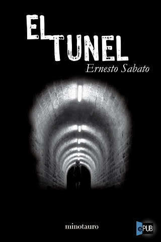

7° Básico
El caballero de la armadura oxidada
Read NowBibiana y su mundo
Read Now8° Básico
El caso del doctor Jekyll y mr Hyde
Read NowLas chicas de alambre
Read Now1° Medio
El retrato de Dorian Gray
Read Now
2° Medio
La amortajada
Read NowEl camino más largo
Read Now3° Medio
Rebelión en la granja
Read NowComo agua para chocolate
Read Now4° Medio

El tunel
Read NowBook Title 12
Read Now